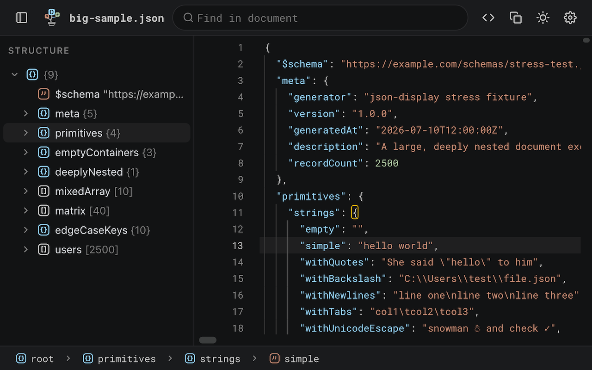

Bonsai
JSON Tree Viewer
A JSON response in a browser tab is a wall of text. Bonsai turns it into a fast, read-only, editor-style viewer — the experience of opening the file in a desktop code editor, without leaving the tab.

Features
Structure panel
A virtualized tree of the whole document, with type icons and counts on every row. Copy any value, or a path as JSONPath, dot or bracket notation — and jump from any editor line straight to its node in the tree.
Editor niceties
Code folding by level, a breadcrumb path bar, and hover actions on every row. Malformed documents still render, with the first error marked at its exact line and column and a clickable jump link.
Full-document search
Case, whole-word and regex search with a live match count. It reaches folded and off-screen content and auto-unfolds matches — which the browser's own find cannot do.
Smart auto-detect
Bonsai takes over the instant a page's content type and body both look like JSON. One click returns you to the raw document, and a toolbar action formats any page on demand.
High performance
Built to stay smooth on huge documents, smoothly rendering up to tens of megabytes without stalling the tab.
Multi-format support
JSON, JSONC, and JSON Lines / NDJSON. Multi-record streams fold into a single array view with a record-count badge.
Customizable UI
Dark and light themes with live switching, bundled fonts, and settings synced across your Chrome profiles.
Local files
Works on local file:// JSON too, once you allow file access — or just
drop a file straight into the viewer.
Keyboard-first
Privacy
Everything runs locally in your browser — no analytics, no telemetry, no remote server, no remote code. Bonsai never transmits page content or any other data anywhere. The only thing it stores is your own settings (theme, layout) in Chrome's sync storage. Full statement in the privacy policy.